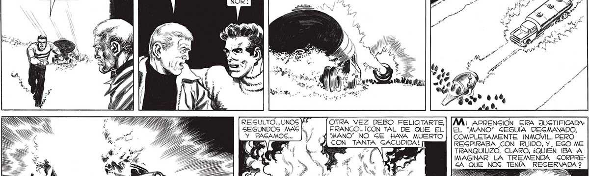

q = A _ UN LANZARRAYOG ! "¡TE HAG VUELTO LOCO! ¿TE CANGAGTE DE VIVIR 2 ¡ATRASGS, GEÑOR! ¡VAN A ENCENDER EL LANZARRAYOG ! MÁ: APRENSGION ERA JUSTIFICADA: EL “MANO” GEGUÍA DEGMAYADO, COMPLETAMENTE INMOVIL. PERO REGPIRABA CON RUIDO, Y. ESO ME TRANQUILIZO. CLARO, ¿QUIEN IBA A IMAGINAR LA TREMENDA GORPREGA QUE NOG TENÍA RESERVADA 2 E APTA Tr IGG T. IAE iv 7 7 Ss TAS Ha OTRA VEZ DEBO FELICITARTE, FRANCO... ¡CON TAL DE QUE EL 'MANO” NO GE HAYA MUERTO CON TANTA GACUDIDA! SEGUNDOS MAS N) Y PASAMOSC... ) . _ o = , DP A Do 169
